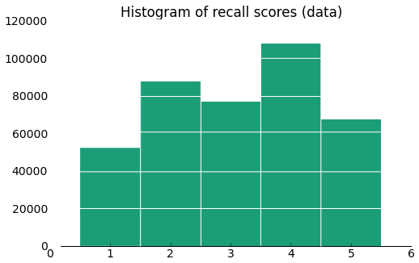
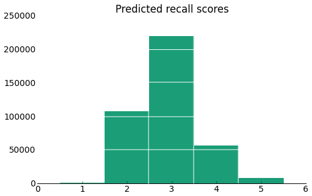
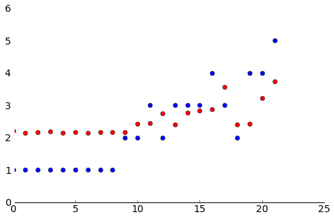
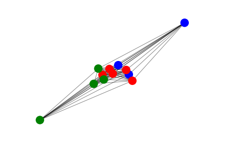
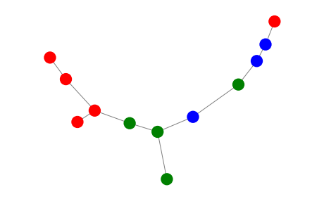

  


Predictive Model
Our primary objective was to find a predictive model for the recall scores of a user, given information about their history. This predictive model allows us to test how well the Ebbinghaus forgetting curve is represented in our data, to see if our users trends actually follow this model. Furthermore, a predictive model allows Firecracker to more effectively refine its spaced learning model, as it helps the system determine when a user has dropped to a certain threshhold of understanding, at which point it is most effective to reintroduce review material. Even more precisely, if we are able to obtain a good model for not only the decay of memory over time, but also the benefit of revising material, this information can be used to optimize the spaced learning algorithm Firecracker uses.
For a more technical and substantial description of our modeling process please refer to the Final Analysis Section in our ipython notebook.
We still have difficulty predicting extreme cases correctly, since we continue to underestimate the number of 1 and 5 recall scores. However, our final error of 458063 is a substantial improvement over the 782307 error in our initial naive model.
We can also see in these examples that the red dots (our predictions) clearly do tend to rise and fall with the blue dots (the actual values). This is further confirmation that our model is accurately representing the data.
We have achieved fairy substantial success in applying the Ebbinghaus forgetting curve model to predict recall scores. The remaining discrepancies are primarily due to the simple fact that there are too many factors involved to model correctly.
Firecracker is not a controlled experiment. The spaced learning algorithm of Firecracker itself interferes with our ability to fit curves: high scores are not rescheduled for 10-20 days, which means our data is not distributed evenly across the time span. Furthermore, again for these high values, it is likely that students have reviewed the material outside of Firecracker during this time, and so the 5's are artificially inflated by that as well, since students forget less than the exponential forgetting curve would expect them to. This in part explains the underrepresentation of scores of 5 in our model.
Most mid-low ratings are rescheduled for the near future, in the next few days. This means that points near t=0 are distributed fairly evenly between 1, 2, 3, and the fit exponential will have time to decay only to 2 or 3 in this short period of time. This explains the underrepresentation of scores of 1, which is also in part an artifact of the spaced learning schedule that Firecracker uses.
Also note that our model is not probabilistic in nature: our model simply predicts the mean of what should be a distribution of possible values. This also prohibits the model from predicting extreme values, due to regression effects.
Network Analysis
For each subject that a pair of users shares, we considered the average score of each user on questions in that subject. Since the difficulty of questions may be different, we divided users' scores on each question by the average score of that question. Since we only considered a users' initial scores on questions, the average is across the subset of data where the given user sees the question for the first time. Then we took the average of the squared differences between the two users' averages in each subject, and used that as our distance. We averaged because different pairs of users may have different numbers of shared subjects, and we want a standardized metric. We also squared the differences because we want to greater penalize cases where users are farther apart.
The spring layout tries to group nodes with large edge-weights near to each other, so it tries to organize the users into similarly-performing groups. From this visualization, it appears like the users may be grouped by institution: the green nodes are towards the bottom left of the graph, the blue nodes are towards the top right, and the red nodes are clumped around the center. A way to verify if users tend to clump by institution is to examine the minimum spanning tree. When doing so, we tried to minimize the distance between the nodes, which is just the inverse of the edge weights.
From this minimum spanning tree we can also see some sort of similarities between users from the same institution. As in the earlier graph, users are generally closer to users from the same institution. This time there's the exception of the red user that is all the way at the other end of the tree from the other red users. In general, however, this tree shows that there are observable differences between institutions, which we expect to be true. It is reasonable to assume that different institutions have different focuses, and that two users within the same institution would score more similarly than two users from two different institutions.
We don't have nearly enough data to make any definitive conclusions, however. After making the data we work with less sparse and ensuring that we get distances between each node by only considering users that share subjects, we were left with only the 12 users above. In order to get a better picture, we need to examine more users, and to do so, we need more data. If we were able to get the full data set of all of Firecracker's users, we would likely be able to do a better analysis. But even if having the full dataset doesn't help too much, our process and results can still be meaningful to Firecracker because they demonstrate that there is likely a difference between institutions. Firecracker is still a relatively young service, so it may not have the wealth of data required to run more conclusive analyses on this matter. In the future, however, when Firecracker attracts more users and the existing users also have used the system more, we may be able to create a better graph that has more nodes from which we can draw more definitive conclusions.